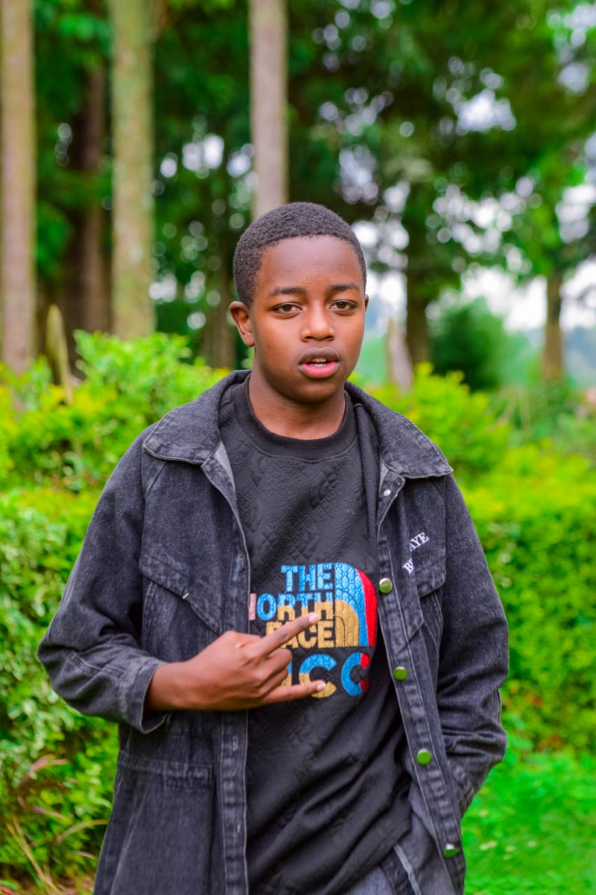

Frontend Developer
Hey there! I'm Denis Kiriinya, a passionate and creative Frontend Developer who loves turning clean code into smooth, interactive, and responsive websites. With solid skills in HTML, CSS, JavaScript, and React, I bring user interfaces to life and build web experiences that actually feel good to use.
I believe that great design isn’t just about looks – it’s about how it works. Whether it’s a sleek landing page, a dynamic web app, or a bold concept, I craft each line of code with purpose. I’m on a mission to level up every single day – and I’m always ready for the next challenge.